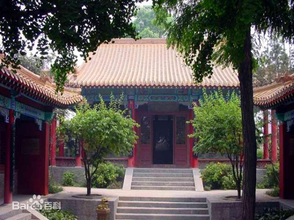

|
|---|
|  |
|---|
戏马台位于徐州市中心区户部山岗上，是历史文化名城徐州现存最早的古迹之一。公元前206 年，盖世英雄项羽灭秦后自立为西楚霸王，定都彭城（即今徐州），于城南的南山上，构筑丛台，以观戏马、演武和阅兵等，故名戏马台。历史上它与苏州园林、南京六朝石刻并列为江苏三宝。 如今戏马古台结构严谨，布局匀称，错落有致，沉雄庄重。前区为两组宏伟的仿古皇家建筑群，以丰富的资料展示西楚霸王悲壮的一生，包括雄风殿、巨鹿大战、霸王别姬、鸿门宴、定都彭城等展室。东侧高台基上，置有铜铸巨鼎一座，上镌“霸业雄风”。鼎呈长方形，双耳四足重6.5吨，高2.25米，长1.91米，宽1.51米。鼎腹铸有歌颂项羽历史功绩的《戏马台鼎铭》铭文一篇。一道琉璃瓦檐赭墙，连接东面两处古朴典雅的四合院。东院称“楚室生春”院，由穿廊、雄风殿和东西配殿组成。殿前立有西楚瞩王项羽的石雕像，高2.85 米，顶盔贯甲，足踏岩石，迎风雨立。雄风殿为“楚室生春”院正殿，殿前卷棚抱厦 的两根蟠龙柱，系珍贵文物，是戏马台建筑群中留存的古老构件之一，雕工粗犷，造型生动。雄风殿后壁上嵌有一组“西楚春秋”壁画，长14米，高1.3米，再现了项羽英勇悲壮的一生。西院称“秋风戏马”院。戏马堂是该院的主殿，堂周环以回廊，24根丹柱绕堂排立，四壁为雕花窗棂。堂中屏风为“秋风戏 马”图；反映当年项羽在虞姬陪侍下，观看士卒驰马操练的场景。东配殿的壁画，由144 块大小不等的正方形和长方形砖坯雕刻烧制而成，长9米，高2米。项庄舞剑画面，描述了当年鸿门宴的紧张气氛。西配殿为一大型壁画，勾勒了兵败垓下后霸王诀别爱姬的离愁场景。 后区依山就势，设计为百米长廊，长廊以古来咏台诗词，当今书法大家笔迹勒石镶壁，既能陶冶游人性情，又使人在游览中受到教益。景区内遍植名木异卉，更有霸业雄风鼎、重九台、乌雅槽、系马桩、项王武库、人杰鬼雄石等诸景点缀其间，使戏马台景区疏密有致，蔚为大观。开放以来登台揽胜的游客络绎不绝，它已成为国内项羽遗踪旅游网络上的一颗熠熠生辉的明珠，也是楚汉文化中杰出的代表。
|